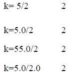
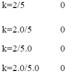
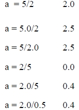

Type Casting: Normally before an operation takes pace both the operands must have the same type. C converts One or both the operands to the appropriate date types by "Type conversion".
This can be achieved in 3 ways:
Implicit Type conversion : In this the data type /Variable of lower type (which holds lower range of values or has lower precision ) is converted to a higher type (which holds higher range of values or has high precision).
This type of conversion is also called "promotion".
If a char is converted into int it is called as Internal promotion
Eg: int I;
char C;
C = "A";
I = C;
Now the int Variable I holds the ASCII code of the char "A"
Assignment Type Conversion: If the two Operands in an Assignment operation are of different data types the right side Operand is automatically converted to the data type of the left side.
Eg: Let k is an int var & a is a float var
int k; yes float a; yes



Explicit Type Conversion: When we want to convent a type forcibly in a way that is different from automatic type conversion, we need to go for explicit type conversion. (type name) expression; Type name is one of the standard data type. Expression may be a constant variable Or an expression this process of conversion is called as casting a value.
Eg: x = (int) 7.5
A = (int) 21.3/(int) 4.5
Y =( int) (a + b)
P = (double)sum/n